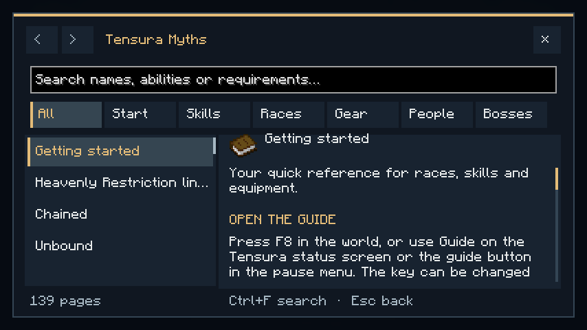
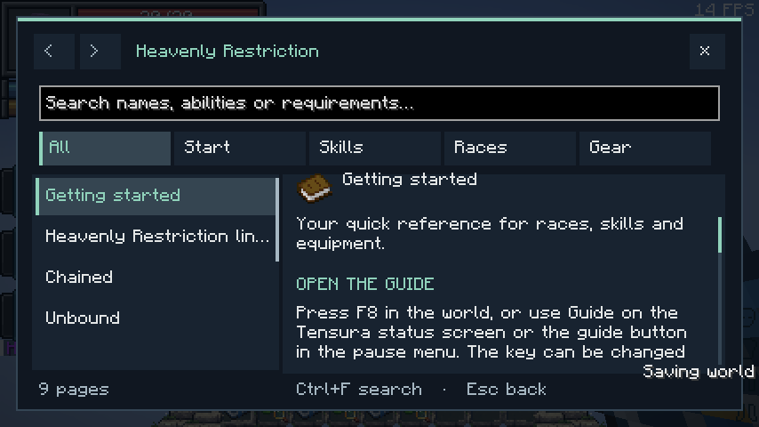

Open the offline guide with F8 while playing. You can change this key under Controls → Key Binds. The pause menu also has Myths Guide or Additions Guide, and Tensura’s status page has a Guide button below the panel.
Contents
The Myths guide covers skills, hunter and Heavenly Restriction progression, secondary races, the individual Convergent races, equipment, otherworlders and bosses. The standalone guide contains its lineage, Chained/Unbound, Schema, movement Battlewills, recovery and the spear.
Search and navigation
- Search names, abilities, damage types or requirements. Multiple words narrow the results.
- Use categories to browse. Core topics appear before advanced race combinations.
- Scroll the page list and article independently; both scrollbars can be dragged.
- Use the arrows for page history and the links at the end of an article for related topics.
- Ctrl+F focuses search. Page Up/Down scroll the article. Esc returns to the previous screen.
Command shortcuts: /mythsguide in Myths, /restrictionguide in the standalone. The guide works without a web connection or an additional guidebook mod. It pauses a local single-player game; multiplayer continues normally.
Pages show default gameplay values. Server settings and bonuses can change them. The guide reads no private player data and does not grant items, skills or stats.

